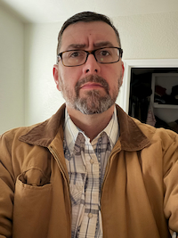

Neal Kammeyer | WDD 130

Hey there! My name is Neal Kammeyer and my family and I moved to Northeastern Arizona (near Snowflake). I have been married to my awesome beautiful wife, Holly for 16 years. We have 3 incredible children: Jakobi (14), Hartley (12), and Nixen (8). We live on 80 acres and have 2 horses, 5 cows (soon to be 6), 18 chickens, and 4 dogs. I have worked for Apple for over 10 years and I am blessed to work from home. Once I graduate, I am hoping to promote within Apple and remain working from home. I am going to do my best to try and remember all the information we are being taught. 😀